; in position space
; in position space Statement
Requirements on
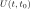
: unitarity (probability conserved), composition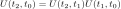
, continuity (Schrödinger 1926; Stone 1932). Then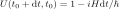
with Hermitian, and
Hermitian, and
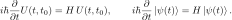
Derivation of the solution
- time independent:
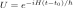
. - Expand
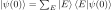
; since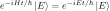
,
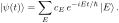
- Stationary states: if
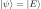
, all expectations are time independent. For any observable commuting with ,
commuting with , 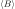
is constant. - Position space with
 :
: 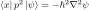
, giving the wave equation.
Probability current
From the equation and its conjugate,
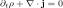
with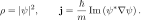
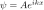
,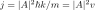
: density times velocity. This current gives transmission coefficients in tunnelling.Energy–time and beats
A superposition of two levels
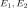
gives expectations oscillating at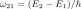
: the "Bohr frequency" radiated in a transition. Neutrino oscillations and spin precession are such beats.Worked example
An electron prepared in
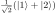
of a 10 nm infinite well: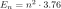
meV, so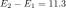
meV and the packet sloshes with frequency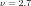
THz — the principle of quantum-well THz emitters and quantum cascade lasers.Pitfall
 holds only if is time independent; for
holds only if is time independent; for
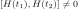
one needs the time-ordered (Dyson) series, see time-dependent perturbation.